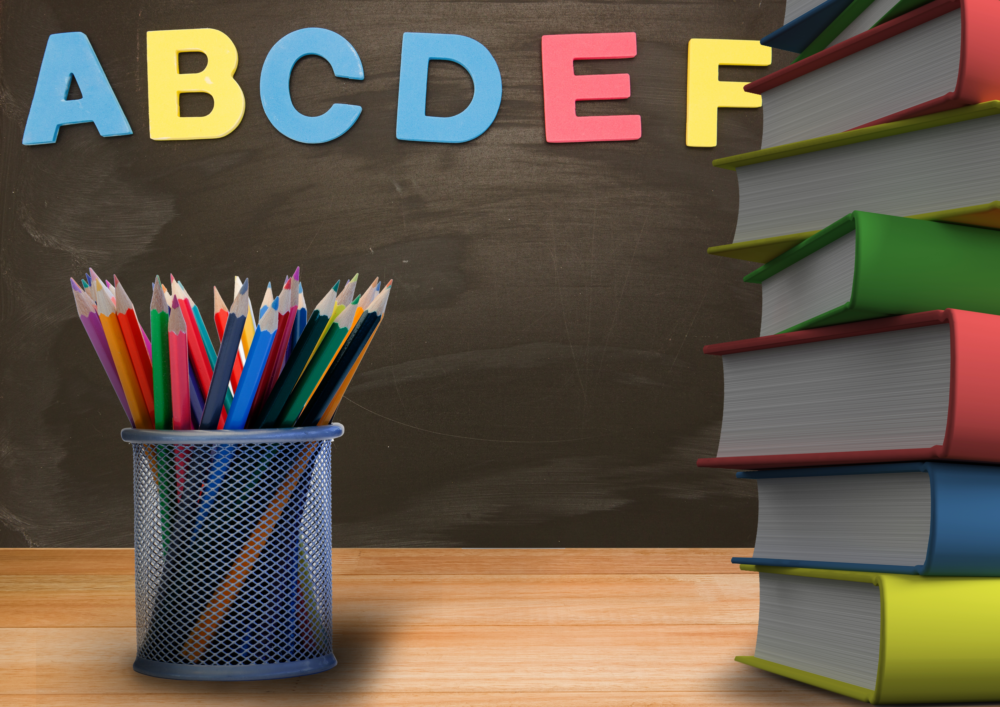
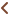
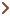

<ion-content>
  <div class="container">
    <ion-icon
      (click)="navigateBack()"
      name="arrow-back-outline"
      class="back-arrow"
    ></ion-icon>
    <div class="framer">
      <h2>Basic of owe</h2>
    </div>

    <br />
    <div>
      <div>
        <p class="story">
          Learn about yoruba adage, learn what are the meaning, understand when
          to apply it. There are lot examples to learn about it and when to use
          it doing conversation
        </p>
        <p class="story">
          Learn about yoruba adage, learn what are the meaning, understand when
          to apply it. There are lot examples to learn about it and when to use
          it doing conversation
        </p>
      </div>
      <br />
      <div>
        

        <p class="story">
          Learn about yoruba adage, learn what are the meaning, understand when
          to apply it. There are lot examples.
        </p>
      </div>

      <div>
        <div class="nav-container">
          <!-- Back Button -->
          <button class="nav-button">
            <!-- Left arrow (using Unicode) -->
            <span class="arrow-left"
              ></span>
            Back
          </button>

          <!-- Next Button -->
          <button (click)="testPage()" class="nav-button">
            Next
            <!-- Right arrow (using Unicode) -->
            <span class="arrow-right"
              ></span>
          </button>
        </div>
      </div>
    </div>
  </div>
</ion-content>
